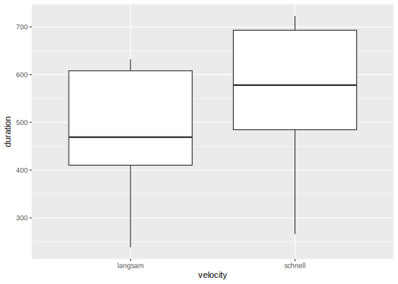

8 Tidying Data with tidyr
Please load the following packages and data frames for this chapter:
##
## Attaching package: 'gridExtra'## The following object is masked from 'package:dplyr':
##
## combineurl <- "http://www.phonetik.uni-muenchen.de/~jmh/lehre/Rdf"
asp <- read.table(file.path(url, "asp.txt"))
avokal <- read.table(file.path(url, "avokal.txt"))
vcv <- read.table(file.path(url, "vcvC.txt"))“tidy datasets are all alike but every messy dataset is messy in its own way” – Hadley Wickham
Hadley Wickham is the chief developer of the tidyverse. The functions of the tidyverse can not only be used to manipulate and process data, but also to clean them.
A clean dataset follows these three principles:
- Every column contains one variable
- Every row contains one observation
- Every cell contains one value
These principles may seem obvious and trivial, but they will be helpful in your everyday work with data in R. You should follow the tidy-data-principles for two main reasons: First, every dataset will be structured in the same consistent way which will facilitate every analysis. Second, the functions of the tidyverse were made to work on columns so it is very reasonable to have one variable per column. In order to demonstrate this we’ll show you examples of the two most common types of messy data.
- Column names are not variables, but values: The columns
schnell(engl. fast) andlangsam(engl. slow) in the data frameavokalare actually values of the variablevelocity.
## schnell langsam Vpn
## 1 430 415 S1
## 2 266 238 S2
## 3 567 390 S3
## 4 531 410 S4
## 5 707 605 S5
## 6 716 609 S6
## 7 651 632 S7
## 8 589 523 S8
## 9 469 411 S9
## 10 723 612 S10- Several variables are stored in one column: The column
Contextin the data framevcvcontains two kinds of information: the left and right phonetic context of a sound. It would be better to separate these into two columns which actually already exist in the data frame (LeftandRight).
## RT Subject Vowel Lang Left Right Context
## 361 647.5 S209 a AE f h f.h
## 362 617.0 S209 a AE f sh f.sh
## 363 728.5 S209 a AE f sh f.sh
## 364 629.0 S209 a AE f th f.th
## 365 688.5 S209 a AE f th f.th
## 366 602.5 S209 a AE s h s.hIt is not trivial to structure a data frame cleanly. Just one example: You have measured the first four formants in vowels. Does it make more sense to have the elicited data in four columns F1, F2, F3, F4? Or rather in two columns Hz (with the formant values in Hertz) and formant (with the values 1, 2, 3, or 4)?
Before we show you how to restructure the datasets above such that they follow the three principles, we want to introduce the tibble.
8.1 Tibbles
The *tibble is a simpler version of a data frame which is often used in the tidyverse. Let’s load another data frame and transform it into a tibble using as_tibble():
When we now enter the name of that tibble, vdata, in the console, we don’t see the full dataset as usual, but instead only the first ten observations. In addition, we can see how many rows and columns the tibble consists of and which object classes the columns have:
## # A tibble: 2,982 × 10
## X Y F1 F2 dur V Tense Cons
## <dbl> <dbl> <int> <int> <dbl> <chr> <chr> <chr>
## 1 53.0 4.36 313 966 107. % - P
## 2 53.6 3.65 322 2058 86.0 I - T
## 3 55.1 10.4 336 1186 123. Y - K
## 4 53.1 4.75 693 2149 119. E - T
## 5 52.7 6.46 269 2008 196. Y + K
## 6 53.3 4.7 347 931 77.5 Y - P
## 7 54.4 3.6 705 1119 224. A + P
## 8 51.2 7.38 248 2377 145. I + P
## 9 54.6 2.4 385 1935 103 Y - T
## 10 58.4 9.17 288 595 244. O + T
## # ℹ 2,972 more rows
## # ℹ 2 more variables: Rate <chr>, Subj <chr>The tibble has the primary object class tbl_df, but additionally also tbl and data.frame. That is why we can still speak of data frames when we refer to a tibble.
## [1] "tbl_df" "tbl" "data.frame"Of course you can also create a tibble yourself, by using the function tibble() instead of data.frame(), e.g.:
## # A tibble: 5 × 2
## x y
## <int> <int>
## 1 1 6
## 2 2 7
## 3 3 8
## 4 4 9
## 5 5 10If you use the import function read_delim() from the tidyverse package readr instead of the read.table() function, the dataset is imported as a tibble automatically.
int <- read_delim(file.path(url, "intdauer.txt"),
delim = " ",
col_names = c("idx", "Vpn", "dB", "Dauer"),
skip = 1)## Rows: 15 Columns: 4
## ── Column specification ───────────────────────────────
## Delimiter: " "
## chr (1): Vpn
## dbl (3): idx, dB, Dauer
##
## ℹ Use `spec()` to retrieve the full column specification for this data.
## ℹ Specify the column types or set `show_col_types = FALSE` to quiet this message.## # A tibble: 15 × 4
## idx Vpn dB Dauer
## <dbl> <chr> <dbl> <dbl>
## 1 1 S1 24.5 162
## 2 2 S2 32.5 120
## 3 3 S2 38.0 223
## 4 4 S2 28.4 131
## 5 5 S1 23.5 67
## 6 6 S2 37.8 169
## 7 7 S2 30.1 81
## 8 8 S1 24.5 192
## 9 9 S1 21.4 116
## 10 10 S2 25.6 55
## 11 11 S1 40.2 252
## 12 12 S1 44.3 232
## 13 13 S1 26.6 144
## 14 14 S1 20.9 103
## 15 15 S2 26.0 212read_delim() also returns the object class for every column in the so called Column specification. The import functions from readr are somewhat more sensitive than the standard R functions. Hier, for instance, we had to specify a few arguments (delim, col_names, and skip) in order to handle the fact that the data frame contained row indices. The standard function read.table() usually works if you just submit the path to the dataset.
Further Information: Tibbles and readr
If you’d like to learn more about the tibble, we recommend chapter 10 from R for Data Science.
The package readr offers further functions to load and save datasets, depending on how columns are separated in the file:
read_csv(): comma separated valuesread_csv2(): columns separated by semicolonread_tsv(): columns separated by tabread_delim(): works for all kinds of separators
This and much more can also be found in chapter 11 from R for Data Science.
8.2 Pivoting

Once we have loaded our data, we can start cleaning them. We can pursue two aims with this: either to structure the data in such a way that every row contains one observation and every column contains one variable, or to structure the data such that it serves a specific purpose, e.g. plotting. tidyr calls this process pivoting and there is a great vignette about the topic:
Above we loaded the data frame avokal and observed that the columns schnell (fast) and langsam (slow) are actually two values of the variable velocity. That is, it would be better to have a column velocity (values: “schnell”, “langsam”) and one called duration (values from schnell and langsam in milliseconds):
## # A tibble: 20 × 3
## Vpn velocity duration
## <chr> <chr> <int>
## 1 S1 schnell 430
## 2 S1 langsam 415
## 3 S2 schnell 266
## 4 S2 langsam 238
## 5 S3 schnell 567
## 6 S3 langsam 390
## 7 S4 schnell 531
## 8 S4 langsam 410
## 9 S5 schnell 707
## 10 S5 langsam 605
## 11 S6 schnell 716
## 12 S6 langsam 609
## 13 S7 schnell 651
## 14 S7 langsam 632
## 15 S8 schnell 589
## 16 S8 langsam 523
## 17 S9 schnell 469
## 18 S9 langsam 411
## 19 S10 schnell 723
## 20 S10 langsam 612The command pivot_longer() transforms the data into the so called “long format”. The three most important arguments are:
cols: all columns that shall be transformedvalues_to: the name of the new column with the valuesnames_to: the name of the new column that will contain the original column names
The pivoting functions from tidyr are very powerful and you can do really complicated operations with them. Let’s take the data frame billboard which is loaded together with the tidyverse and contains the Billboard Chart rankings from the year 2000:
## # A tibble: 317 × 79
## artist track date.entered wk1 wk2 wk3 wk4
## <chr> <chr> <date> <dbl> <dbl> <dbl> <dbl>
## 1 2 Pac Baby… 2000-02-26 87 82 72 77
## 2 2Ge+her The … 2000-09-02 91 87 92 NA
## 3 3 Doors … Kryp… 2000-04-08 81 70 68 67
## 4 3 Doors … Loser 2000-10-21 76 76 72 69
## 5 504 Boyz Wobb… 2000-04-15 57 34 25 17
## 6 98^0 Give… 2000-08-19 51 39 34 26
## 7 A*Teens Danc… 2000-07-08 97 97 96 95
## 8 Aaliyah I Do… 2000-01-29 84 62 51 41
## 9 Aaliyah Try … 2000-03-18 59 53 38 28
## 10 Adams, Y… Open… 2000-08-26 76 76 74 69
## # ℹ 307 more rows
## # ℹ 72 more variables: wk5 <dbl>, wk6 <dbl>,
## # wk7 <dbl>, wk8 <dbl>, wk9 <dbl>, wk10 <dbl>,
## # wk11 <dbl>, wk12 <dbl>, wk13 <dbl>, wk14 <dbl>,
## # wk15 <dbl>, wk16 <dbl>, wk17 <dbl>, wk18 <dbl>,
## # wk19 <dbl>, wk20 <dbl>, wk21 <dbl>, wk22 <dbl>,
## # wk23 <dbl>, wk24 <dbl>, wk25 <dbl>, wk26 <dbl>, …Similarly to avokal, billboard presents another case in which some columns (wk1, wk2, wk3, etc.) are actually values of one variable (week). So we’d like to create one column which contains the week (1, 2, 3, etc.) and one column that contains the Billboard rank. To achieve this, we take all colums whose names start with “wk”, put these names in a new column called week, and the values from the original columns into a new column called rank. The prefex “wk” from the old column names can be dropped by means of the argument names_prefix. Lastly, we remove all NA (not available) values – for instance, there is no row for week 8 of 2Pac’s “Baby Don’t Cry” because the song didn’t rank in the top 100 that week.
billboard %>%
pivot_longer(cols = starts_with("wk"),
names_to = "week",
values_to = "rank",
names_prefix = "wk",
values_drop_na = TRUE)## # A tibble: 5,307 × 5
## artist track date.entered week rank
## <chr> <chr> <date> <chr> <dbl>
## 1 2 Pac Baby Don't Cry (Ke… 2000-02-26 1 87
## 2 2 Pac Baby Don't Cry (Ke… 2000-02-26 2 82
## 3 2 Pac Baby Don't Cry (Ke… 2000-02-26 3 72
## 4 2 Pac Baby Don't Cry (Ke… 2000-02-26 4 77
## 5 2 Pac Baby Don't Cry (Ke… 2000-02-26 5 87
## 6 2 Pac Baby Don't Cry (Ke… 2000-02-26 6 94
## 7 2 Pac Baby Don't Cry (Ke… 2000-02-26 7 99
## 8 2Ge+her The Hardest Part O… 2000-09-02 1 91
## 9 2Ge+her The Hardest Part O… 2000-09-02 2 87
## 10 2Ge+her The Hardest Part O… 2000-09-02 3 92
## # ℹ 5,297 more rowsThe counterpart to pivot_longer() is pivot_wider(). This function is used much less frequently and takes as main arguments:
names_from: the column containing the unique values that shall be used as new column namesvalues_from: the column containing the values to fill the new columns
A use case for pivot_wider() is given by the data frame us_rent_income which is loaded withe the tidyverse (much like billboard and a few others):
## # A tibble: 104 × 5
## GEOID NAME variable estimate moe
## <chr> <chr> <chr> <dbl> <dbl>
## 1 01 Alabama income 24476 136
## 2 01 Alabama rent 747 3
## 3 02 Alaska income 32940 508
## 4 02 Alaska rent 1200 13
## 5 04 Arizona income 27517 148
## 6 04 Arizona rent 972 4
## 7 05 Arkansas income 23789 165
## 8 05 Arkansas rent 709 5
## 9 06 California income 29454 109
## 10 06 California rent 1358 3
## # ℹ 94 more rowsWe want to create a column income and a column rent from the levels of the column variable and fill the two new columns with the values from estimate.
## # A tibble: 104 × 5
## GEOID NAME moe income rent
## <chr> <chr> <dbl> <dbl> <dbl>
## 1 01 Alabama 136 24476 NA
## 2 01 Alabama 3 NA 747
## 3 02 Alaska 508 32940 NA
## 4 02 Alaska 13 NA 1200
## 5 04 Arizona 148 27517 NA
## 6 04 Arizona 4 NA 972
## 7 05 Arkansas 165 23789 NA
## 8 05 Arkansas 5 NA 709
## 9 06 California 109 29454 NA
## 10 06 California 3 NA 1358
## # ℹ 94 more rowsThe results contains a few NA values. These can be replaced by zeros by means of the argument values_fill.
## # A tibble: 104 × 5
## GEOID NAME moe income rent
## <chr> <chr> <dbl> <dbl> <dbl>
## 1 01 Alabama 136 24476 0
## 2 01 Alabama 3 0 747
## 3 02 Alaska 508 32940 0
## 4 02 Alaska 13 0 1200
## 5 04 Arizona 148 27517 0
## 6 04 Arizona 4 0 972
## 7 05 Arkansas 165 23789 0
## 8 05 Arkansas 5 0 709
## 9 06 California 109 29454 0
## 10 06 California 3 0 1358
## # ℹ 94 more rowsAgain, pivot_wider() can conduct some very complex operations. The main arguments names_from and values_from can actually take more than one column. pivot_wider() then creates as many new columns as there are combinations of levels from the original columns. Here we put in the columns estimate and moe for values_from. Thus, we receive four new columns:
## # A tibble: 52 × 6
## GEOID NAME estimate_income estimate_rent moe_income
## <chr> <chr> <dbl> <dbl> <dbl>
## 1 01 Alab… 24476 747 136
## 2 02 Alas… 32940 1200 508
## 3 04 Ariz… 27517 972 148
## 4 05 Arka… 23789 709 165
## 5 06 Cali… 29454 1358 109
## 6 08 Colo… 32401 1125 109
## 7 09 Conn… 35326 1123 195
## 8 10 Dela… 31560 1076 247
## 9 11 Dist… 43198 1424 681
## 10 12 Flor… 25952 1077 70
## # ℹ 42 more rows
## # ℹ 1 more variable: moe_rent <dbl>Last but not least a phonetic example. We want to create new columns from the levels of the column Bet (lexical stress) in the data frame asp and fill them with the duration values in column d. The code throws a warning because there are several values per cell in the new columns as you can also tell from the weird output:
## Warning: Values from `d` are not uniquely identified; output
## will contain list-cols.
## • Use `values_fn = list` to suppress this warning.
## • Use `values_fn = {summary_fun}` to summarise
## duplicates.
## • Use the following dplyr code to identify duplicates.
## {data} |>
## dplyr::summarise(n = dplyr::n(), .by = c(Wort, Vpn,
## Kons, Bet)) |>
## dplyr::filter(n > 1L)## # A tibble: 1,723 × 5
## Wort Vpn Kons un be
## <chr> <chr> <chr> <list> <list>
## 1 Fruehlingswetter k01 t <dbl [2]> <NULL>
## 2 Gestern k01 t <dbl [2]> <NULL>
## 3 Montag k01 t <dbl [2]> <NULL>
## 4 Vater k01 t <dbl [4]> <NULL>
## 5 Tisch k01 t <NULL> <dbl [3]>
## 6 Mutter k01 t <dbl [2]> <NULL>
## 7 konnte k01 k <dbl [2]> <NULL>
## 8 Kaffee k01 k <NULL> <dbl [3]>
## 9 Tassen k01 t <NULL> <dbl [2]>
## 10 Teller k01 t <NULL> <dbl [2]>
## # ℹ 1,713 more rowsThe warning also kindly offers three solutions to this problem: We can use the argument values_fn to suppress the warning, show how many values per cell there are, or summarise the values using one of the summarising functions. The last solution seems to make sense here: wherever there are several values per cell, we compute their mean with mean():
## # A tibble: 1,723 × 5
## Wort Vpn Kons un be
## <chr> <chr> <chr> <dbl> <dbl>
## 1 Fruehlingswetter k01 t 19.1 NA
## 2 Gestern k01 t 22.4 NA
## 3 Montag k01 t 22.3 NA
## 4 Vater k01 t 25.4 NA
## 5 Tisch k01 t NA 55.8
## 6 Mutter k01 t 19.3 NA
## 7 konnte k01 k 43.9 NA
## 8 Kaffee k01 k NA 56.1
## 9 Tassen k01 t NA 49.4
## 10 Teller k01 t NA 59.4
## # ℹ 1,713 more rowsIn none of the pivoting examples we overwrote the data frames with their pivoted form (e.g. with a double pipe). The functions pivot_longer() and pivot_wider() are often useful for temporary changes, e.g. because you need the data frame in a certain format for a plot:
avokal %>%
pivot_longer(cols = c(schnell, langsam), names_to = "velocity", values_to = "duration") %>%
ggplot() +
aes(x = velocity, y = duration) +
geom_boxplot()
8.3 Separating
Our second example for messy data was the data frame vcv which contains two types of information in the column Context:
## RT Subject Vowel Lang Left Right Context
## 361 647.5 S209 a AE f h f.h
## 362 617.0 S209 a AE f sh f.sh
## 363 728.5 S209 a AE f sh f.sh
## 364 629.0 S209 a AE f th f.th
## 365 688.5 S209 a AE f th f.th
## 366 602.5 S209 a AE s h s.hWe want to have the left and right phonetic context, which are separated here by a dot, in separate columns. (For the purpose of this demonstration we remove the columns Left and Right from the data frame because the are the desired solution.)
To achieve our aim we use the function separate() with the following obligatory arguments:
col: the column whose contents are to be separatedinto: the new column namessep: how to separate the strings in columncol
The first two arguments are pretty clear in our case: col is the column Context and into takes our desired column names Left and Right. For the third argument sep, on the other hand, there are two options. The first is to indicate the index at which to separate the string, e.g. put the first two letters in one and the rest of the letters in the second new column. To do this, we can use sep = 2. However, when we look at the distinct values in Context, this wouldn’t be our desired result:
## NULLThis is because the left context can consist of one or two letters; and also, there is a dot which would then be inherited by the left or right context, as you can see here:
## # A tibble: 810 × 6
## RT Subject Vowel Lang Left Right
## <dbl> <chr> <chr> <chr> <chr> <chr>
## 1 648. S209 a AE f .h
## 2 617 S209 a AE f .sh
## 3 728. S209 a AE f .sh
## 4 629 S209 a AE f .th
## 5 688. S209 a AE f .th
## 6 602. S209 a AE s .h
## 7 632. S209 a AE s .sh
## 8 574 S209 a AE s .th
## 9 719 S209 a AE s .h
## 10 569 S209 a AE s .th
## # ℹ 800 more rows## # A tibble: 810 × 6
## RT Subject Vowel Lang Left Right
## <dbl> <chr> <chr> <chr> <chr> <chr>
## 1 648. S209 a AE f. h
## 2 617 S209 a AE f. sh
## 3 728. S209 a AE f. sh
## 4 629 S209 a AE f. th
## 5 688. S209 a AE f. th
## 6 602. S209 a AE s. h
## 7 632. S209 a AE s. sh
## 8 574 S209 a AE s. th
## 9 719 S209 a AE s. h
## 10 569 S209 a AE s. th
## # ℹ 800 more rowsThe second option is a regular expression (also called regex). That means that we give the function a pattern that tells it how to separate the contents of Context. This would work well here because we would like to separate the contexts at the dot. Unfortunately, the dot is a marker for one (random) character in regular expressions. So if we want to indicate in our pattern that we actually mean a dot (and not any random character), we need to protect the dot by means of the escape sign, a double backslash.
## # A tibble: 810 × 6
## RT Subject Vowel Lang Left Right
## <dbl> <chr> <chr> <chr> <chr> <chr>
## 1 648. S209 a AE f h
## 2 617 S209 a AE f sh
## 3 728. S209 a AE f sh
## 4 629 S209 a AE f th
## 5 688. S209 a AE f th
## 6 602. S209 a AE s h
## 7 632. S209 a AE s sh
## 8 574 S209 a AE s th
## 9 719 S209 a AE s h
## 10 569 S209 a AE s th
## # ℹ 800 more rowsSo this is the result we aimed for: every column contains only one variable!
Further Information: regular expressions
Regexs are a complex topic which we cannot get into in this module. If you want to learn more about them – they are very useful in any programming language after all – we recommend chapter 14 from R for Data Science.